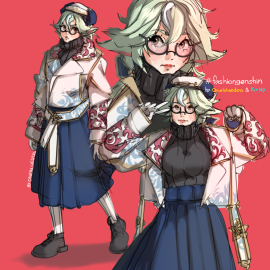
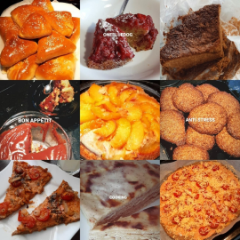
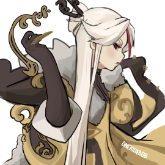

Blog
Welcome to my blog! Here, I share not only insights into my artwork, but also snippets of my everyday life. From behind-the-scenes looks at my creative process to articles about the food I love to cook, my blog is a place where I can connect with you on a more personal level. Join me as I share my thoughts, experiences, and inspirations, and get to know the person behind the art. I hope you enjoy exploring my blog!

11.04.2023
How I drew Sucrose from Genshin

24.03.2023
The dishes I cook most often

05.03.2023
My favorite characters from Genshin
02.03.2023
When did I start liking anime?